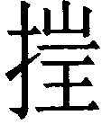
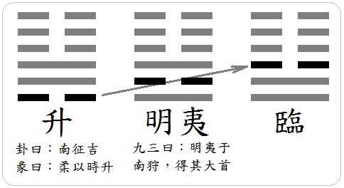

䷭ 升卦 地風升
升，元亨。用見大人，勿恤。南征吉。初六，允升，大吉。九二，孚乃利用禴，无咎。九三，升虛邑。六四，王用亨于岐山，吉，无咎。六五，貞吉，升階。上六，冥升，利于不息之貞。
【卦名】
今本：升 歸藏：稱 帛書：登 秦簡：升 清華簡： 海昏簡：升 鄭玄：昇
|
象曰：地中生木，升。君子以順德，積小以高大。（圖：小配） |
《說文》：「升，十龠也。从斗，亦象形。」段玉裁注：「十合為升，十升為斗，十斗為斛。」升原本是計量的單位，甲骨文卜辭中，祭祀時盛酒以進獻於神也稱升，現今升字取上升義，或許是由獻酒引申而來。升也通昇、陞，鄭玄卦名即作昇，以日出引申為逐漸上升的意思，所以《序卦傳》說：「聚而上者謂之升，故受之以升。」《象傳》：「地中生木，升。君子以順德，積小以高大。」
傳統以登、高升註解升，但細讀《周易》經文，升或可解釋為敬獻。如卦辭的「升，元亨」及初六的「允升」。
帛書作「登」，《說文》：「上車也。」引申之，凡上陞皆曰登，因此也通升。
登與升在許多先秦典籍中就通用，例如《儀禮》鄭注：「升字當為登。登，成也。今之《禮》皆以登為升，俗誤已行久矣。」再如《禮記》說「年穀不登」，《論語．陽貨》則說「新穀既升」。登同升，解釋為成、收成。五穀豐登即五穀豐收。段玉裁註解《說文》升字則說：「按：今俗所用又作陞，經有言升不言登者，如《周易》是也；有言登不言升者，《左傳》是也。」
清華簡作「」，為徵的古字再加上扌字旁，疑為徵的異體字。《說文》：「徵，召也。」段玉裁注：「按：徵者證也、驗也，有證驗，斯有感召；有感召，而事以成，故《士昏禮》注、《禮運》注又曰：徵，成也。」徵除了作為徵召、徵收的意思外，也與升字音近義近。可解釋為徵驗，驗證，並引申為成。如《儀禮．士昏禮》「納徵」鄭玄注：「徵，成也，使使者納幣以成昏禮。」
歸藏易卦名作稱，《說文》：「銓也，从禾爯聲。春分而禾生，日夏至，晷景可度。禾有秒，秋分而秒定。律數：十二秒而當一分，十分而寸。其以為重：十二粟為一分，十二分為一銖。故諸程品皆从禾。」（按：秒本義為禾芒。）段玉裁注：「銓者，衡也。《聲類》曰：銓所以稱物也，稱俗作秤。」稱即秤，就是秤重、測量重量，後來也引申為對稱、相稱，意思為平衡、均衡，合宜。稱音與升、登近，也可假借為升。
【卦義】
進而上，登階逐步而上，由低處往高處爬，逐步成長。
升卦卦象是木在地下，木以土為生，土中之木可逐步成長為大樹，因此以升為卦名，取其逐漸成長的意思。卦象下巽為漸入、逐漸進入，這也代表升的成長與上升過程是漸進式的，而不是跳躍式的。
巽為入為漸進，上坤為高地為丘墟，二體為登上高地之象，即六三講的「升虛邑」（按：虛為大丘）。
《序卦》：「萃者，聚也。聚而上者謂之升，故受之以升。」升在萃卦之後，與萃卦為相綜的一對卦。所以升卦的意思並不能單以「上升」來思考：它是萃聚之後的結果，也就是「聚沙成塔」，積少成多式的成長，慢慢累積而成。就像樹木之長成，不是一夜之間。所以《象傳》說：「地中生木，升。君子以順德，積小以高大。」
在吉凶的論斷上，升卦大致上屬於吉卦，但需要有外力的幫助，貴人的提攜，逐步緩進。例如，若是事業，要有上司提拔；愛情，要有長者媒合；學業，要有老師指導。短期之事有憂鬱之象而難成。長遠之事則可以下定決心，逐步循序達成。往南征戰為吉，利於拜訪大人。
《雜卦》：「萃聚而升不來也。」問來人則來人不至，因兌現巽伏。萃卦上兌下坤，兌為見（現），坤為地為眾。卦象為與眾人見面，因此名萃聚，卦辭說王假有廟。升為伏於地下，因此人不來。
升卦典故可能與古公亶父帶領族人從豳南遷到岐下有關。首先為卦辭說的「南征吉」，為遠行至南方的岐下。九二的禴祭，九三的「升虛邑」，以及六四的「王用亨於歧山」，至六五的「升階」，似乎都與古公亶父在岐下建立都城有關。
升，元亨，用見大人，勿恤，南征吉。
- 《彖》曰：柔以時升，巽而順，剛中而應，是以大亨；用見大人，勿恤，有慶也；南征吉，志行也。
- 《象》曰：地中生木，升。君子以順德，積小以高大。
- 《序卦》：聚而上者謂之升，故受之以升。升而不已必困。
- 《雜卦》：萃聚而升不來也。
- 《易占》：升者尚也。
進升，大善而嘉會合禮，以此見大人，不必憂慮。往南出征，吉。
南征也可引申為勇敢前進，因古時以南方為前。坤和巽分屬西南和東南方，兩者都屬南方之卦，因此曰南征吉。
【字義】
用見大人：或作「利見大人」。《釋文》：「用見，本或作利見。」帛書作「利見大人」。關於「見大人」，經文多作「利見大人」，如乾卦九二和九五，訟卦、蹇卦卦辭及上六、萃卦，以及巽卦。唯獨升卦作「用見大人」。至於為何言「用見」而不說「利見」？代淵曰：「尊爻無此人，故不云利見。」李光地：「不曰利見大人而曰用見，代氏之說得之。」所謂尊爻，即六五，升卦陽爻在二與三，因此曰尊爻無此人。來知德的說法或可補充代氏之說：「不曰利見而曰用見者，九二雖大人，乃臣位，六五之君欲用九二，則見之也。」
勿恤：不必憂慮。恤，憂慮。
南征：向南征伐，或曰：往南方遠行。《爾雅》：「征，邁，行也。」《說文》：「正行也。」段玉裁注：「《釋言》、《毛傳》皆曰：征，行也。許分別之，征為正行，邁為遠行。」征為有目標的行程，而邁則為遠行，兩字《爾雅》互訓，《說文》則分而言之。征亦有遠行之義，即長征。另亦有征伐之義，即正行。此或指古公亶父率領族人向南遷徙至岐下之事，則征取的是長征、遠行之義。經文中言及南方者還有明夷九三「明夷于南狩」。另困卦九二「朱紱方來」有易學家將朱註解為南方，然而，依《說卦傳》，坎為赤（困九五困于赤紱），乾為大赤（即朱色）。坎在後天八卦圖的北方，而乾在西北。「朱」註解為南方，是依後天八卦圖的五行色。依後天八卦圖，赤與朱都屬南方。
初六，允升大吉。
《象》曰：允升大吉，上合志也。
必定上升，大吉。《象》曰「上合志也」，與上面志氣相同，因此必然可上升。升卦吉道在有人提攜，初六為有人提攜者，因此可順利上升。
升卦「升」的意義來自於下面的巽卦，巽為木，為「漸進」，此木在地中往上生長，逐漸鑽出地面。初六是巽卦的主爻，原本就應當向上生長，因此說「允升」。但初六柔順而謙遜之極，又不當位，因此自己難以上升。因承九二（柔承剛，順），與九二相合，因而能受到九二的提攜而一起上升。
【字義】
允：信也，王弼：「允，當也。」這是引申義。必然、當然的意思。《說文》卷十夲部引作：「進也，从夲从屮，允聲。《易》曰：升大吉。」允字另收於卷八儿部，曰：「允，信也。」升即進升。《漢上易傳》：「施氏易作，進也。」「施氏」指的應該是漢代的施讎。段玉裁：「升初六爻辭鄭曰：『升，上也。』荀爽云：『謂一體相隨，允然俱升。』《九家易》曰：『謂初失正，乃與二陽允然合志俱升。』允然者，升之皃，不訓信，蓋古本作升也。」
九二，孚乃利用禴，无咎。
《象》曰：九二之孚，有喜也。
有誠意然後才宜於用儀式較簡單的禴禮來祭天，沒有罪咎。
有誠意自能感動上天，雖然獻禮很薄，儀式簡單，但仍然可以與神明相感應，而得到保祐。《象傳》說「有喜也」，得此爻當有喜事。
九二雖不當位，但居中，下有初六相承，外與六五相應，原本應當為吉，何以只能無咎？升卦之吉，貴在有比自己強的人相助，九二本身陽剛，是能夠幫助別人者，卻反而無人能夠提攜九二，因此僅得無咎。初六與九二相鄰，相應的六五居尊亦屬陰柔，兩爻都是得九二相助者。所以初六與六五皆吉，但九二反為無咎，因九二正是助人者，非為人所助者。
當代李鏡池認為，孚當為俘，「孚乃利用禴」，宜於用俘虜於禴祭，這是古代禴祭用人牲之證。詳論見〈關于周易幾條爻辭的再解釋－－答劉蕙孫同志〉一文。
【字義】
孚：誠心，虔誠。禴，音「月」，原本為夏季的祭祀，另有一說認為禴是殷商的春天之祭，引申指的是簡便、從簡的祭禮。當代學者以孚為俘，俘虜也。
禴：音月，於周為夏季的祭祀，通說認為，因夏祭最簡，引申指的是簡便、從簡、簡約的祭祀。另有一說認為禴是殷商的春天之祭，也是祭祀中最簡約者。禴通礿，礿之言約也。王弼：「禴，殷春祭名也，四時祭之省者也。」《釋文》：「禴，殷春祭名，馬王肅同。鄭云：夏祭名。蜀才作躍，劉作爚。」《日講易經解義》：「禴，夏祭名。夏時物未備，惟以聲樂交於神明，祭之薄者也。」由於夏季的作物還未完備，因此只簡單以音樂敬獻給神明，是祭祀中最為簡薄的。《周禮》：「春祠夏禴，祼用雞彝、鳥彝......秋嘗冬烝，祼用斝彝、黃彝，皆有舟。」《禮記》：「天子諸侯宗廟之祭，春曰礿，夏曰禘，秋曰嘗，冬曰烝。」鄭注：「此蓋夏殷之祭名。周則改之，春曰祠，夏曰礿，以禘為殷祭。」
九三，升虛邑。
《象》曰：升虛邑，无所疑也。
登上山丘上的城邑。
坤為土地、邦國，有城邑之象，坤在上，則為高地，丘墟之象。巽為進升主體，九三為巽卦最外的一爻，能夠直升上面的坤地，上又與上六相應，毫無阻礙，此卦有得土之象。
由卦辭「南征吉」，九三登虛邑（大丘之邑）以及六四「王用亨于岐山」來看，升卦可能與古公亶父由豳遷徙至岐下建立岐邑有關。
【字義】
虛：本義為大丘，山丘大則讓人感覺空曠，因此引申為空虛、虛無。馬融：「虛，邱也。」用的是虛之本義。《說文》：「虛，大丘也，崐崘丘謂之崐崘虛。古者九夫為井，四井為邑，四邑為丘。丘謂之虛，从丘虍聲。」段玉裁注：「虛本謂大丘，大則空曠，故引伸之為空虛。如魯少皞之虛，衛顓頊之虛，陳大皞之虛，鄭祝融之虛，皆本帝都，故謂之虛，又引伸之為凡不實之稱。」古代有在丘虛建邑之俗，如段注所引數例。李零：「中國古代，城邑多選在高山之下，小山之上。這種聚落古人叫『丘墟』，因此叫『某丘』的地名很多。『虛』同墟，不是空虛之虛。」升卦可能是文王太公，即古公亶父在岐下建邑之事，因此曰「升虛邑」。傳統註解多取空虛之義，如孔穎達：「九三履得其位，升於上六，上六體是陰柔，不距於己，若升空虛之邑也。」朱熹：「陽實陰虛，而坤有國邑之象。」
六四，王用亨于岐山，吉，无咎。
《象》曰：王用亨于岐山，順事也。
大王在岐山舉行享祀，吉，沒有罪咎。
另一解釋為：大王藉以在岐山而亨通，吉，沒有罪咎。
隨卦上六作「王用亨于西山」，岐山即西山，因岐山在西，故稱西山。文王稱西伯。隨上六與升六四的典故，應該是古公亶父從北方的豳遷徙到西南岐下的故事。
崔憬：此象太王為狄所逼，徙居岐山之下，一年成邑，二年成都，三年五倍其初，通而王矣，故曰王用享于歧山。
【字義】
王用亨于岐山：當作「王用享於岐山」，大王在岐山宴客或舉行享祭。王，指周王，或指古公亶父。岐山，為周的發達之地，隨卦作「西山」。亨當作享，享為享祀、祭祀。馬融：「亨，祭也。」鄭玄：「亨，獻也。」也可通饗，饗宴的意思。周王因此在岐山饗宴賓客，或祭祀謝天。隨卦上六「王用亨于西山」帛書作「王用芳于西山」，帛書中享皆作芳，與「元亨」的亨有別。上博簡作「王用亯于西山」，亯即享。享字在古經典中多解釋作享祀，古文中也通饗、鄉、卿、亯，其原義都有聚餐、饗宴的意思，引申之，敬獻食物給神明亦為享（亯），即享祀。朱熹：「亨，亦當作祭享之享。自周而言，岐山在西，凡筮祭山川者得之。」傳統註解多以亨為亨通，如《釋文》：「亨，許庚反，通也。」程頤與朱震註解隨卦上六認為，隨卦講的是周太王古公亶父的故事，但此爻又說，是文王之故事。兩爻當是同一典故。
六五，貞吉，升階。
《象》曰：貞吉升階，大得志也。
貞定為吉，登階而坐上主位。
此言祭天之禮，登階而踏上主座，也就是踐阼之禮。
朱熹：以陰居陽，當升而居尊位，必能正固，則可以得吉而升階矣。階，升之易者。
【字義】
升階：登階而上，周王的祭天之禮登上主位。階，階梯。升帛書作登，登字甲骨文畫的就是雙手捧豆（裝祭品的容器）登階而上。此亦有上與天通、直達天聽之義。孔穎達：「保其尊貴而踐阼矣，故曰貞吉升階也。」
上六，冥升，利于不息之貞。
《象》曰：冥升在上，消不富也。
黑暗中登進，有利於不休息而堅定守正的人。
上六是升卦的最頂點，一方面已是升無可升之處，另一方面又與九三相應，得九三之助，所以仍有繼續往上升之助力，因此有「升升不息」之象。這種堅持如果用在好事是非常好的，反之，若用在壞事就很糟糕。最忌被權位沖昏了頭，耽溺於榮華富貴而停不下來，因此以「不息之貞」勉之，貞者定也，正也。
豫卦上六曰「冥豫」。
此或指古代建邑的升階之禮至暗夜仍不停息，至豫卦之「冥豫」為至夜仍狂歡不止。
【字義】
冥：冥有相當多的可能解釋，「冥升」的冥傳統多註解為昏冥，喻指人之冥昧與迷罔。孔穎達:「冥猶昧也。處升之上，進而不已，則是雖冥猶升也，故曰冥升。」程頤:「六以陰居升之極，昏冥於升，知進而不知止者也，其為不明甚矣。」豫卦上六「冥豫」的「冥」註解則相當分歧，最常見的是幽冥、冥昧，引申則為耽溺，沉迷而不知返。豫卦之註解，或可試用於「冥升」，以下所舉為豫卦之註解，詳解可再參考豫卦上六。一、冥為夜晚，暗冥，此為冥之本義。冥豫即豫樂至夜，為豫樂而不知節制之象。冥升則是暗夜仍在升進，有升升不已之義。李道平：「冥之為義，于月為晦，于日為夜。有處豫極，所謂舞斯慍，慍斯戚，將于冥豫見之矣。」二、冥引申為昏昧、耽溺，馬融：「冥，冥昧，耽於樂也。」程頤：「耽肆於豫，昏迷不知反者也。在豫之終，故為昏冥已成也。若能有渝變，則可以无咎矣。」
不息：不停止。貞，正也，指節操；貞也可指德性，或堅定。
【彖傳】
《彖》曰：柔以時升，巽而順，剛中而應，是以大亨；用見大人，勿恤，有慶也；南征吉，志行也。
柔以時升：像是在講卦變，但不知所指何爻。最可能是六五，但六五從何而升？只可能是二或三。若從二而升，那麼升卦是蹇卦而來。若從三而升，那麼就是坎卦而來。不管是從蹇或坎，《彖傳》餘卦都沒有這樣的卦變體例。不過虞翻似乎認為升是蹇卦六二升五而來：「柔謂五，坤也。升謂二。」升與萃的產生模式應該與陰陽相反的无妄及大畜卦類似。《彖傳》是以无妄為遯卦而來，无妄言「剛自外來而為主於內」，遯卦九三至初成无妄，初九即无妄成卦之主爻。而大畜言「剛上而尚賢」，大壯九三至上成大畜。同理可推，萃卦應是觀卦而來，觀六四至上成萃為柔進而上。而升卦則是從臨卦而來，臨六三降至初成升才是。這也是虞翻所說的：「臨初之三，又有臨象；剛中而應，故元亨也。」然而這是柔爻降，而不是升。個人竊疑，柔以時升是否講的是旁通？就旁通觀點來看，升卦是坤卦二、三至乾卦五、上而成，坤體變為升，乾體變大壯。另一可能，以升卦柔爻將升，而成明夷，再成臨，如圖。初六升至二之後，下體成離為南，明夷九三說「明夷于南狩」。然而《彖傳》並無此卦變之例。不過這個解釋似乎可以說明為何升卦言南征吉，而明夷九三言明夷于南狩。《周易》講到「南」之方位者只有這兩次，而卻可用「柔以時升」如此將其關聯起來。而且升卦無離，為何又說南征吉？因此這種解釋的可能性還是值得保留。
巽而順：以二體卦德解釋卦義。下為巽，上為坤為順，巽而順之象。
剛中而應：九二主爻剛中，與六五相應。
用見大人，勿恤，有慶也；南征吉，志行也：虞翻：「謂二當之五，為大人，離為見，坎為恤，二之五得正，故用見大人勿恤，有慶也。」「離，南方卦，二之五成離，故南征吉，志行也。」